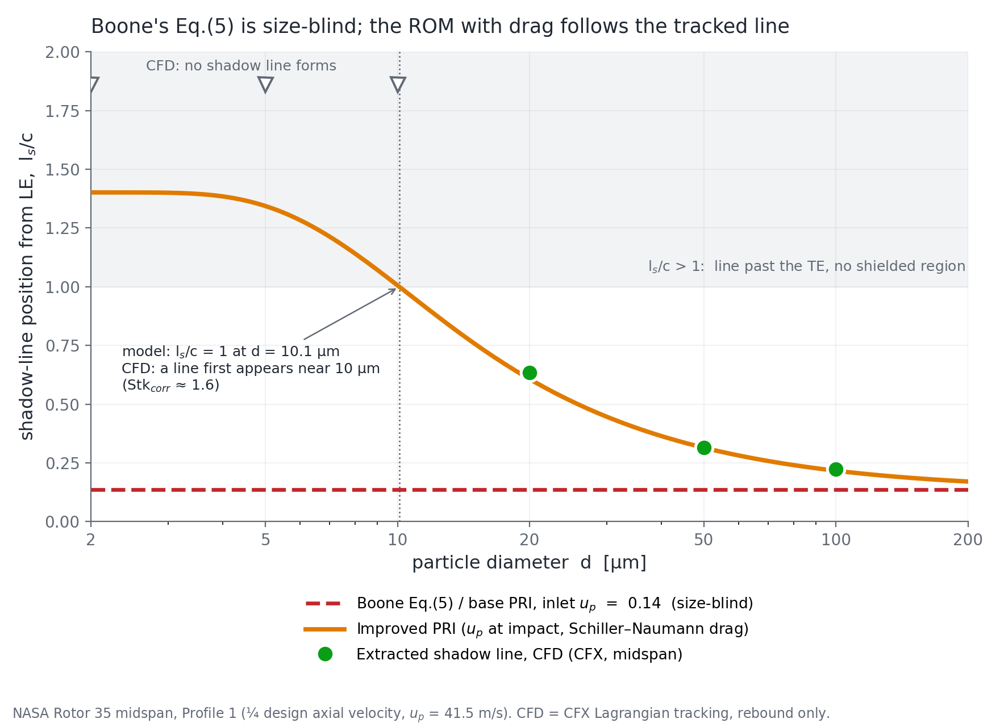
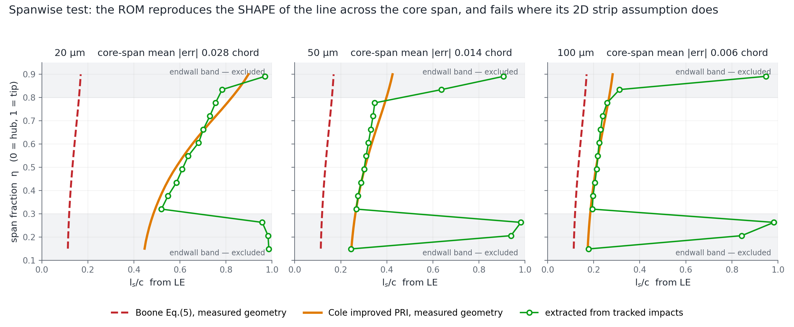

Deciding whether a reduced-order model can be trusted
I verified a fast model against the simulation it is meant to replace. The derivation held, one constant in the code was wrong, it beat the published relation it extends by a factor of seventeen, and it stops working at a diameter I could predict two independent ways.
Replacing a solver with something cheaper is the normal direction of travel now, whether the cheap thing is an analytical relation or a network. What decides whether it ships is where it stops being true, and whether you found that out before somebody else did. How well it fits is the easy half.
This is the whole exercise on one model, written up in the order I did it. The model predicts where particles stop striking a rotating blade, because the blade in front shields the rest of the surface. The reference is Lagrangian particle tracking through a CFD solution of NASA Rotor 35, an open geometry, which is slow and which I had already run across a range of particle sizes. I did not write the model, which is the point: a model checked by the person who built it is worth less than one checked against somebody else’s reference.
Step one: is the derivation right, independently of the code?
The model extends a published relation by integrating drag along the particle path, so the approach angle is evaluated where the particle arrives rather than where it started. Before testing anything numerically, two claims in it are checkable on paper.
The first is that its base case reduces to the published relation. It does, and not approximately. Expanding the angle difference and dividing through turns one into the other exactly. I then checked that algebra over 20,000 random inputs and the largest relative difference was 1.1 × 10−12, which is floating point and nothing else. That is worth more than agreement: it means the derivation recovers the published result from first principles rather than assuming it.
The second is that the drag integral inside it is the same integral behind the corrected Stokes number used elsewhere in this project, which comes from a 1982 paper neither of us was working from. Setting the fluid at rest collapses one to the other. Evaluated at four diameters the two agree to machine precision, with the same constant. Two people derived the same function by different routes without noticing.
Step two: does the code do what the derivation says?
Those are separate questions and conflating them is how wrong results survive review. So I reimplemented the solve independently, as a bracketed root find rather than the original fixed-point loop, and compared. Agreement to 0.022 chord, consistent with the printed tolerance.
One line disagreed with its own derivation. The code carries the constant
0.158 in one place and 0.15 in another. They come from two different
standard drag correlations and only one of them is the one being derived. Worst effect over
the sample space is 0.012 chord, about 1.2%.
Small enough to live with, and exactly the kind of thing a reviewer finds. Two other things in the same routine would not survive unusual inputs. The iteration loop has no cap. A Reynolds number is computed without an absolute value, so it goes negative in silence if the particle ever outruns the gas.
Step three: does it beat the thing it replaces?
The published relation is closed at the inlet, and at the inlet the particle approach angle does not depend on particle size. I measured that: it varies by less than 0.003° across a fifty-fold size range. So the relation returns the same answer, 0.14 chord, for every diameter. The measured boundary moves by a factor of 2.8 over the same range.

| Six cases | mean error | worst |
|---|---|---|
| Extended model | 0.010 chord | 0.027 |
| Published relation, closed at the inlet | 0.174 chord | 0.478 |
A seventeen-fold reduction in mean error, across a five-fold size range and a four-fold range of injection velocity.
One of those six is censored rather than measured, and I left it out of the statistic. At the highest injection velocity the footprint reaches the trailing edge, so a percentile of a quantity defined on the blade pins near 1.0 by construction. The number exists, it is computable, and it is not a measurement of anything. Including it would have flattered both models.
Step four: the test nobody had run
Everything above is at mid-span, where the model is a single number. But the blade is twisted and the spacing changes with radius: solidity runs 1.68 to 1.31 and the setting angle 42.6° to 59.9° from hub to tip. So the relation predicts a shape across the span, and not only a position. That is a much harder test, and neither study had attempted it, because it needs the geometry measured off the CFD mesh at constant radius rather than one mid-span triple.

| Across the span | mean error | worst |
|---|---|---|
| Extended model | 0.016 chord | 0.051 |
| Published relation | 0.251 chord | 0.595 |
It reproduces where the boundary sits and how it marches aft toward the tip. Outside the middle half of the span I stopped reporting, and said why rather than quoting a bad number. Near the endwalls most impacts are particles rebounding off the casing and hub rather than arriving directly, and the flow is contaminated by corner separation and tip leakage. That is where a two-dimensional strip assumption stops being testable. It is a weaker claim than saying the model is wrong there, and a more defensible one.
Step five: where does it stop working, and for the right reason?
Below about ten microns the model returns a boundary beyond the trailing edge, meaning no shielded region exists. The CFD agrees: there is no boundary at those sizes. It would have been easy to write that up as the model succeeding at the limit.
It is not. The model says no boundary because its geometric interception window has opened past the trailing edge. The CFD shows no boundary because the particles have stopped behaving ballistically and follow the gas around the blade, which the model has no mechanism for at all. Right answer, different mechanism. The honest claim is that the model correctly bounds where its own assumptions fail, not that it captures the physics on the other side of that bound.
What makes the bound usable is that two unrelated routes put it in the same place. The model's own crossing sits at 10.1 µm. The tracked data, which knows nothing about the model, stops forming a boundary at a corrected Stokes number of about 1.6, which on this rotor is 10.4 µm.
Could the agreement have been manufactured?
Worth asking of your own result before someone asks it of you. There are three free inputs. I moved each by ±20%:
| Input | swing in the prediction |
|---|---|
| Fluid axial speed | ±0.063 chord |
| Injection velocity | ±0.042 |
| Inlet to leading-edge distance | ±0.022 |
No single input is a knob large enough to produce the result, every swing being under 0.07 against a gap of 0.47 chord between the two models at the size where they differ most. The same check also corrected a claim in the original write-up, that predictive accuracy is governed by the particle velocity: true of the base model, where it is the only free input, but in the extended model the fluid velocity matters slightly more.
The measured boundary itself gets the same treatment. The pipeline that originally produced it is not on disk, so I rebuilt the extraction from raw impact positions and calibrated it against the surviving outputs to within 0.009 chord on all three cases where both exist. The cut it uses is not tuned: there is a density cliff at the boundary, the 98th percentile sitting at 0.215 chord and the 99th at 0.727, so any cut across a wide band gives the same answer. A report flag prints that ladder, so anyone running it on their own data can check their footprint has an edge at all before trusting the number.
What I sent back
A self-contained package that runs on raw impact exports and needs nothing of mine: no mesh, no solver, no licence. The model with the constant fixed and a bracketed solver, the boundary extractor, a comparison driver, the measured rotor geometry as JSON, a demo configuration that reproduces my six cases and a template to point at new data, and a README carrying the caveats and every change I made.
Finding a bug in a model is worth very little on its own. Handing it back working, with the test that would have caught it, is the part that changes what happens next.
Why this is the part that transfers
Nothing above needs a compressor. Prove the derivation separately from the implementation. Measure against a reference you trust. Run the hardest test the data supports, not the one that flatters. State the failure bound and check it two ways. Refuse the numbers that cannot carry the claim. None of those steps changes if the fast thing is a response surface or a neural surrogate instead of an equation.
It is also the question I keep arriving at from different directions. Comparing two particle-wall models, mass flux and two independent erosion correlations agreed to within one percent. A particle count disagreed by half. The count turned out to be set by an arbitrary cutoff rather than by physics, so it could never have settled anything. Deciding what a comparison is entitled to claim comes before making it.